Chuẩn UI ReUI — đợt B3 thống nhất biểu đồ (bảng màu chuỗi chung, gom code chép trùng, tách file > 200 dòng)
Vì sao làm
Ba biểu đồ của app (Hiệu suất theo tháng — @reui/chart-6, Cơ cấu doanh thu — @reui/chart-13, Doanh thu và chi phí 12 tháng tới — @reui/chart-36) mỗi cái mang bảng màu, hook và chữ chép riêng từ block gốc; "Doanh thu" mang ba màu; ba màu chuỗi ở nền sáng dưới 3:1; file biểu đồ dài tới 779 dòng. Đợt B3 của bộ chuẩn UI ReUI chốt một bảng màu chuỗi chung, gom phần chép trùng về components/charts/, tách file lớn — không đổi dữ liệu, props, bố cục hay hành vi.
Đã hứa
- AC-1 — Given phạm vi file của đợt, When quét mã nguồn ba thư mục biểu đồ, Then không còn
- AC-2 — Given `components/charts/palette.ts`, When tính tương phản từng chuỗi trên `--card`
- AC-3 — Given `.claude/skills/onehub-ui/data-color.md`, When đọc mục Biểu đồ, Then không còn
- AC-4 — Given ba thư mục biểu đồ và `components/charts/`, When dò trùng lặp (cửa sổ 6 dòng mã
- AC-5 — Given phạm vi file của đợt, When đếm dòng mọi `.ts`/`.tsx`, Then không file nào quá
- AC-6 — Given `app/eslint-suppressions.json` và lint của app, When chạy
- AC-7 — Given hai nơi dùng biểu đồ (`components/insight/insight-page.tsx`,
- AC-8 — Given ảnh chụp cấu trúc "trước" (cây gốc của nhánh) và "sau" (cây HEAD), chụp liền
- AC-9 — Given app chạy với dữ liệu local, When chụp ba khung ở sáng 1280, tối 1280, sáng 390,
- AC-10 — Given tài liệu đo, When đọc `docs/research/ui-baseline-2026-10.md` và
Thiết kế
docs/superpowers/specs/2026-10-23-ui-clean-b3-charts-design.md
Quyết định
- 2026-10-22 · Máy · approach · S1 — Hỏi-1: bảng màu chung theo NGHĨA (phương án A) — Doanh thu một màu chàm (indigo) ở cả ba biểu đồ, cơ cấu doanh thu dùng thang chàm, RevPAR chuyển sang xanh ngọc (teal), bậc màu ở nền sáng nâng lên cho đủ 3:1.Spec G4 đòi một bảng màu biểu đồ; hiện Doanh thu mang ba màu ở ba biểu đồ (evidence/before), và teal/amber/sky-500 chỉ đạt 2,2–2,7:1 ở nền sáng.
- 2026-10-22 · Máy · approach · S1 — Hỏi-2: khai feature_loop.suite_keys = [test.app, test.ui_lint_rules] — lệnh chạy lại mỗi lượt chấm và ở đường nền._acceptance/config.yaml chưa có suite_keys nên đường nền thoát mã 2; kit đòi người chọn một lần, và đợt chỉ đụng app/ + plugin lint onehub-ui.
- 2026-10-22 · Máy · approach · S1 — Phần dùng chung của ba biểu đồ đặt ở thư mục mới app/src/components/charts/.components/page/ là khung trang (PageHeader, StatTiles, tiers), lib/ không chứa component JSX; biểu đồ cần chỗ riêng cho component + hook + palette.
- 2026-10-22 · Máy · approach · S1 — Giữ nhịp 400ms/ease-out của đường xu hướng và ô chỉ số là nút bấm cả ô như block gốc chart-6, gỡ 3 mục suppress bằng eslint-disable-next-line có lý do 'nguyên bản @reui/chart-6' thay vì đổi nhịp hay đổi sang Button.AGENTS.md (luật ReUI) cấm đổi nhịp chuyển động có sẵn và cấm đặt padding/height lên component đã cài; spec §3/A4 cho phép ngoại lệ mang lý do.
- 2026-10-22 · Máy · descope · S1 — Không gộp useStillSeries (metric-plot) với useFrozenDemo (mix-donut) dù cùng đọc data-demo.Một bên theo dõi đổi thuộc tính data-demo bằng MutationObserver, bên kia chỉ đọc một lần và thêm prefers-reduced-motion; gộp là đổi hành vi.
- 2026-10-22 · Máy · descope · S1 — Không đụng ô KPI: khối Tổng doanh thu của revenue-mix/chart.tsx và các ô Stat của pnl/chart.tsx giữ nguyên từng dòng.Kế hoạch Phần B giao phần KPI cho đợt B2 (một kiểu StatTiles).
- 2026-10-22 · Máy · descope · S1 — bỏ design-pass — kho chưa khai design_pass.proto_route và đợt không đổi bố cục/luồng; quyết định thị giác duy nhất (bảng màu) trình bằng ảnh app thật trước + bản thử phương án A chụp trên trang thật (evidence/before, evidence/proto-a).Nghi thức design-pass dừng ngay khi thiếu proto_route; bản thử A dựng tạm trên host thật rồi hoàn lại code.
- 2026-10-22 · Máy · approach · S1 — Đo không-đổi-hành-vi bằng bản chụp cấu trúc DOM không màu + chữ sau thao tác (b3-capture.mjs), không bằng so ảnh pixel.Đợt cố ý đổi màu chuỗi nên ảnh pixel trước/sau luôn khác; bản chụp cấu trúc chạy hai lần liền trên cùng cây cho kết quả giống hệt.
- 2026-10-22 · Máy · approach · S1 — Hỏi-3: chuỗi được miễn ngưỡng tương phản 3:1 là đúng 4 khoá — Chi phí (slate-300, 1,48:1 ở nền sáng), bậc thứ ba của thang cơ cấu (2,01:1), Khác và hatch — và luật miễn này ghi vào data-color.md cho mọi biểu đồ sau.Bốn khoá này là màu nguyên bản block chart-36/chart-13: cột phụ hoặc bậc nhạt, số đi kèm ở chú giải và tooltip; nâng lên đủ 3:1 làm cột chi phí xám đậm ngang cột doanh thu.
- 2026-10-22 · Máy · approach · S1 — Đo không-đổi-hành-vi bằng bản chụp cấu trúc DOM không màu + kết quả thao tác (gồm CSV, toast) cho cả ba khung, CỘNG so ảnh từng byte cho khung P&L (không đổi màu); trước/sau chụp liền nhau cùng bản script.Phản biện chỉ ra so pixel chỉ chết với hai khung đổi màu; ảnh chụp lặp lại trên cùng cây giống nhau từng byte (20/20 tệp), nên khung P&L so được tuyệt đối.
- 2026-10-22 · Người · seal · gate1 —
- 2026-10-22 · Máy · fix · S2 — Thước E9 neo bản 'trước' vào chính commit nó chụp (before.head là tổ tiên của HEAD, mã cây app/src khớp commit đó) thay vì merge-base với nhánh chính.Nhánh B3 đứng trên Phần A (chưa merge vào main), nên merge-base với main là cây cũ hơn cây B3 xuất phát; neo vào merge-base làm E9 đỏ oan.
- 2026-10-22 · Máy · approach · S2 — Khoá 'rest' (phần Khác) không có lớp chấm riêng: chấm của 'Khác' dùng màu hatch như block gốc chart-13; E2 chỉ đòi swatch khớp cặp sáng/tối khi khoá có swatch.Block gốc tô lát Khác bằng zinc-100/800 nhưng chấm chú giải bằng zinc-300/600 (màu nét gạch); ép một swatch khớp nền zinc-100 làm chấm gần như vô hình trên thẻ trắng.
- 2026-10-22 · Máy · fix · S3 — Chụp bản 'trước' trên cùng dev server bằng cách tạm khôi phục app/src về b273de1 (git restore) rồi trả lại HEAD, script ghi mã cây của tệp trên đĩa và đòi khớp commit khai bằng --as-of; bỏ cách chạy cây gốc ở cổng thứ hai.Turbopack từ chối node_modules dạng symlink ra ngoài cây (lỗi 'Could not find the Next.js package'), còn chép node_modules cho một lần chụp là quá nặng.
- 2026-10-22 · Máy · fix · S3 — Bản chụp cấu trúc bỏ chữ trong thẻ <style> (chỉ ghi là có thẻ), vì ChartContainer sinh <style> chứa biến màu của chuỗi.Lần so đầu tiên sau Task 2 đỏ ở đúng 8 thẻ <style> mang --color-current/--color-lead đổi theo bảng màu — màu, không phải cấu trúc.
- 2026-10-22 · Máy · fix · S3 — plot-motion.ts tách thành ba tệp (plot-reveal, bar-capture, bar-morph) thay vì hai, và đồng hồ reveal của margin-plot dời thành hook useRevealClock trong plot-scope.ts.Phần morph một mình đã quá 200 dòng, margin-plot sau khi tách còn 206 dòng; thân hàm giữ nguyên, chỉ thêm host vào deps (ref ổn định).
- 2026-10-23 · Máy · fix · S4-r1 — Vá hai lỗ đo trong hợp đồng mà vòng 1 xác nhận: thước data-color nay kiểm bậc nằm đúng cột Sáng/Tối theo tiêu đề bảng, thước palette kiểm thêm quan hệ nghĩa→khoá ở swatchOf (chấm P&L và chấm lát Cơ cấu); thêm 3 ca phá ghim thông điệp; thêm b3-check.mjs vào paths các eval dùng nó.review-findings vòng 1: đảo cột sáng/tối hoặc đổi swatchOf sang khoá khác vẫn ra ĐẠT (AC-3, AC-1 chưa được chứng); paths thiếu tệp thước làm lượt kế có thể chép kết quả cũ cho eval có thước đã đổi.
- 2026-10-23 · Máy · fix · S4-r2 — Vá tận gốc ba lỗ đo trong hợp đồng của vòng 2: b3-capture đọc tooltip trong chính khung và rê lên lát donut, tooltip rỗng là lỗi; b3-check có ma trận 11 khoá viết trước (khoá lệch khuôn, thiếu, thừa đều đỏ), khoá thiếu lớp chấm đỏ trừ 'rest', quét --chart-* cả trong palette.ts, và structure đỏ khi hover rỗng; thêm 6 ca phá ghim; chụp lại cặp trước/sau.review-findings vòng 2: hover Cơ cấu doanh thu ghi rỗng ở cả trước lẫn sau (so rỗng với rỗng), khoá palette lệch khuôn bị bỏ im lặng, swatch vắng được cho qua — cùng lớp 'ma trận rút từ parse' với vòng 1 nên lần này viết ma trận tường minh.
- 2026-10-23 · Máy · fix · S4-r2 — E10 khai rõ POST /api/v1/user-events (beacon telemetry có sẵn) được phép 200/401 khi chưa đăng nhập; mọi request khác tới app vẫn phải 2xx/3xx.E10 khớp mọi kỳ vọng hiển thị và thao tác nhưng đỏ vì lưới mạng gặp 401 của beacon user-event-beacon.tsx (có từ feat memory-m1+m2, không do B3); vòng 1 cùng eval chỉ gặp 200.
Bằng chứng
Các eval
| Eval | Tiêu chí | Loại | Verdict | run_id | verified_at |
|---|---|---|---|---|---|
| E1 | AC-1 | script | PASS | minted-ui-clean-b3-charts-E1-r3 | 2026-10-23T00:31:34Z |
| E2 | AC-2 | script | PASS | minted-ui-clean-b3-charts-E2-r3 | 2026-10-23T00:31:34Z |
| E3 | AC-3 | script | PASS | minted-ui-clean-b3-charts-E3-r3 | 2026-10-23T00:31:34Z |
| E4 | AC-4 | script | PASS | minted-ui-clean-b3-charts-E4-r3 | 2026-10-23T00:31:34Z |
| E5 | AC-5 | script | PASS | minted-ui-clean-b3-charts-E5-r3 | 2026-10-23T00:31:34Z |
| E6 | AC-6 | test | PASS (CARRY-FORWARD TỪ ROUND 1) | minted-ui-clean-b3-charts-E6-r1 | 2026-10-23T00:02:53Z |
| E7 | AC-6 | script | PASS | minted-ui-clean-b3-charts-E7-r3 | 2026-10-23T00:31:34Z |
| E8 | AC-7 | script | PASS | minted-ui-clean-b3-charts-E8-r3 | 2026-10-23T00:31:34Z |
| E9 | AC-8 | script | PASS | minted-ui-clean-b3-charts-E9-r3 | 2026-10-23T00:31:34Z |
| E10 | AC-9 | ui-check | PASS | E10-r3 | 2026-10-23T00:31:34Z |
| E11 | AC-1 | script | PASS | minted-ui-clean-b3-charts-E11-r3 | 2026-10-23T00:31:34Z |
| E12 | AC-10 | script | PASS | minted-ui-clean-b3-charts-E12-r3 | 2026-10-23T00:31:34Z |
| E13 | AC-9 | ui-check | PASS | ui-clean-b3-charts-E13-verify-001 | 2026-10-23T00:31:34Z |
| E14 | AC-8 | script | PASS | minted-ui-clean-b3-charts-E14-r3 | 2026-10-23T00:31:34Z |
Chi tiết từng eval
PASS E1 · script
AC-1: Given phạm vi file của đợt, When quét mã nguồn ba thư mục biểu đồ, Then không còn
palette: ĐẠT
PASS E2 · script
AC-2: Given `components/charts/palette.ts`, When tính tương phản từng chuỗi trên `--card`
contrast: ĐẠT
PASS E3 · script
AC-3: Given `.claude/skills/onehub-ui/data-color.md`, When đọc mục Biểu đồ, Then không còn
data-color: ĐẠT
PASS E4 · script
AC-4: Given ba thư mục biểu đồ và `components/charts/`, When dò trùng lặp (cửa sổ 6 dòng mã
duplicates: ĐẠT
PASS E5 · script
AC-5: Given phạm vi file của đợt, When đếm dòng mọi `.ts`/`.tsx`, Then không file nào quá
file-size: ĐẠT
PASS (CARRY-FORWARD TỪ ROUND 1) E6 · test
AC-6: Given `app/eslint-suppressions.json` và lint của app, When chạy
PASS E7 · script
AC-6: Given `app/eslint-suppressions.json` và lint của app, When chạy
suppressions: ĐẠT
PASS E8 · script
AC-7: Given hai nơi dùng biểu đồ (`components/insight/insight-page.tsx`,
api: ĐẠT
PASS E9 · script
AC-8: Given ảnh chụp cấu trúc "trước" (cây gốc của nhánh) và "sau" (cây HEAD), chụp liền
structure: ĐẠT
PASS E10 · ui-check
AC-9: Given app chạy với dữ liệu local, When chụp ba khung ở sáng 1280, tối 1280, sáng 390,
PASS E11 · script
AC-1: Given phạm vi file của đợt, When quét mã nguồn ba thư mục biểu đồ, Then không còn
46/46 ca đạt
PASS E12 · script
AC-10: Given tài liệu đo, When đọc `docs/research/ui-baseline-2026-10.md` và
docs: ĐẠT
PASS E13 · ui-check
AC-9: Given app chạy với dữ liệu local, When chụp ba khung ở sáng 1280, tối 1280, sáng 390,
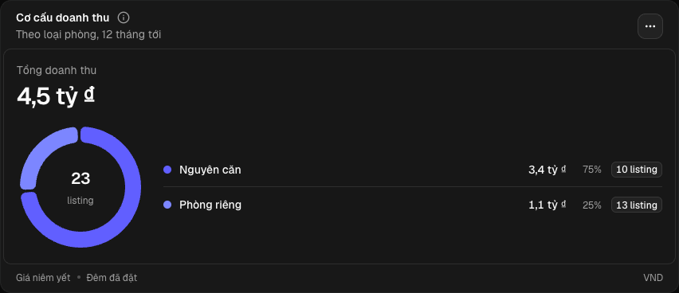
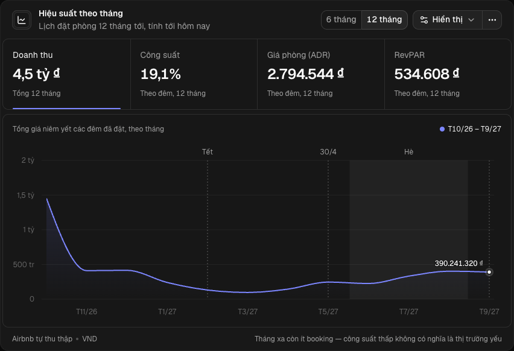
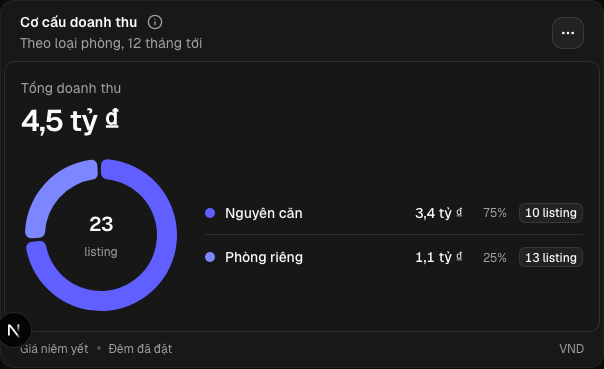
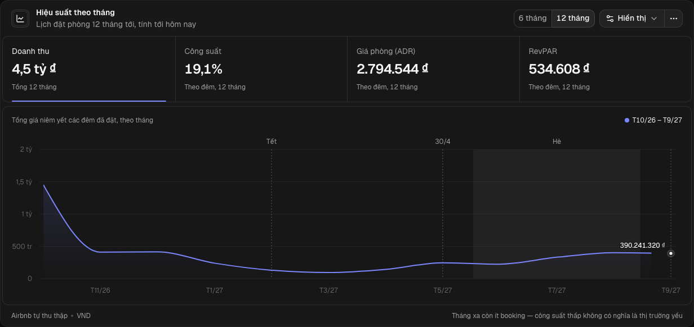
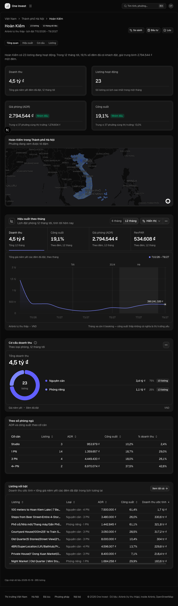
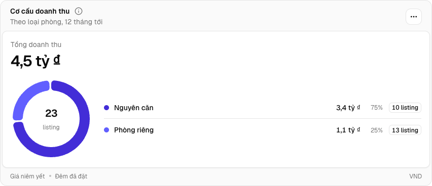
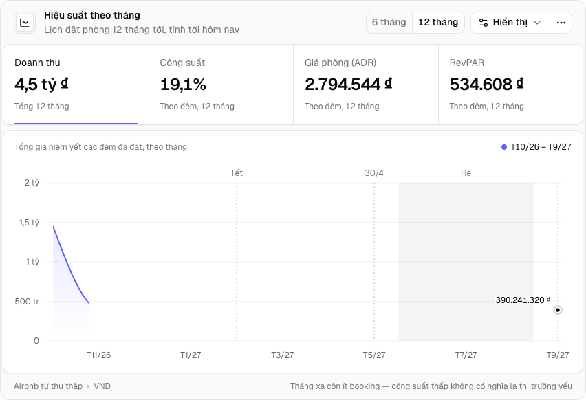
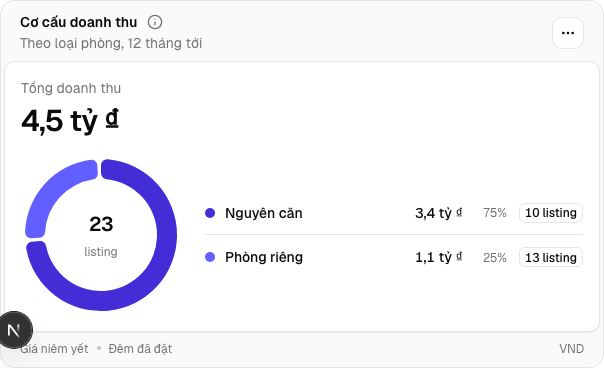
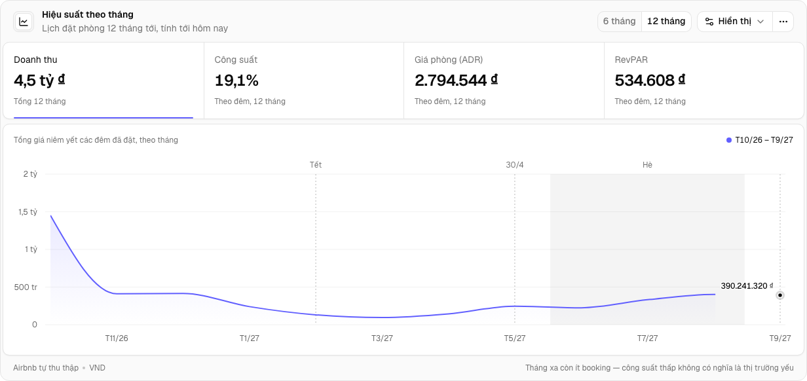

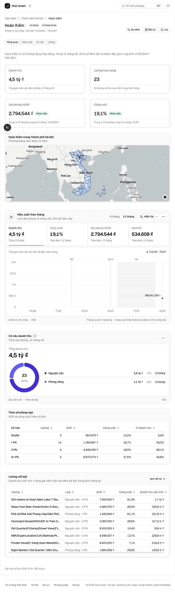
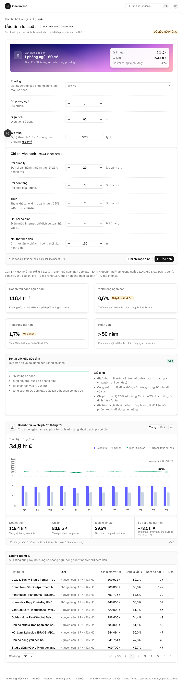

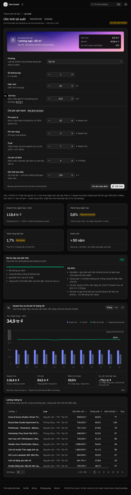
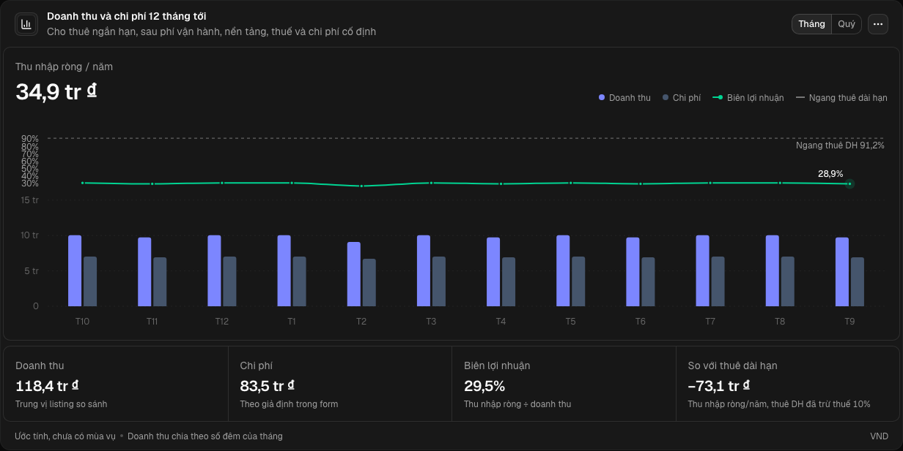

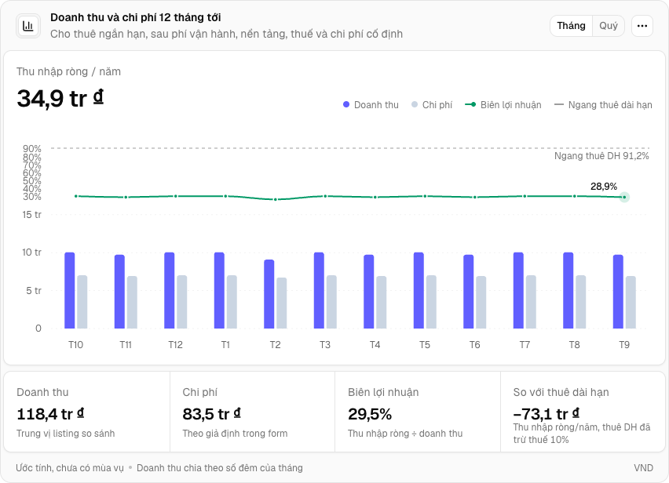
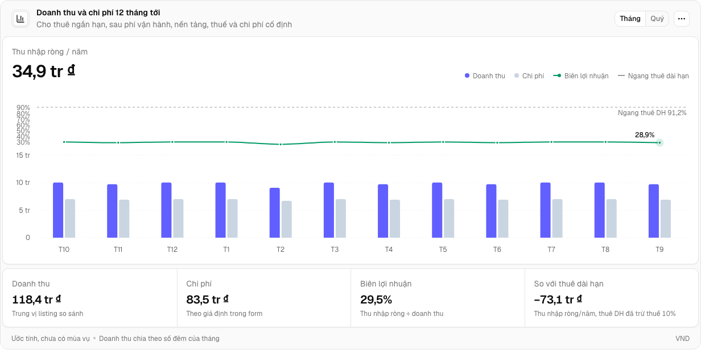
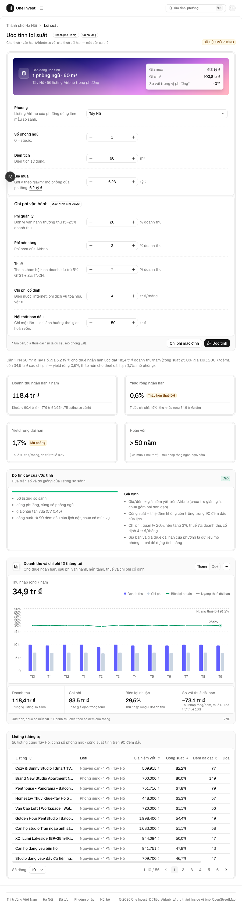
PASS E14 · script
AC-8: Given ảnh chụp cấu trúc "trước" (cây gốc của nhánh) và "sau" (cây HEAD), chụp liền
pixels: ĐẠT
Eval không phân biệt (Analyst)
Vòng verify
- Round 1: PASS — 15/15 eval đạt; hai lỗ đo trong hợp đồng (kiểm cột sáng/tối của data-color và kênh swatchOf) được vá ở vòng 2.
- Round 2: E10 không đạt — rail network thấy một POST /api/v1/user-events bị từ chối (chưa đăng nhập) tới origin app, loại app-fail, mà expected không khai; mọi khía cạnh hiển thị và chức năng của E10 đều khớp expected. Trả về triển khai.
- Round 3: PASS — hợp đồng E10 khai beacon telemetry /api/v1/user-events là ngoại lệ được phép; E10 chạy lại (E10-r3) khớp expected, lưới mạng sạch; E13 và 12 lệnh còn lại đạt, E6 carry-forward từ round 1.
Tài nguyên
| Khối | Tác tử | Token đầu ra |
|---|---|---|
| S4 round 1 | 24 | 97.457 |
| S4 round 2 | 25 | 107.049 |
| S4 round 3 | 23 | 106.072 |
3 lượt chấm · tổng 310.578 token
Giới hạn và ngoài hợp đồng
- Ô KPI: khối "Tổng doanh thu" trong revenue-mix/chart.tsx và các ô `Stat` của pnl/chart.tsx — đợt B2 (một kiểu `StatTiles`).
- `app/src/app/ops/**`, `components/ops/**` — đợt B1 đang làm song song.
- Đổi theme/brand, kể cả `--chart-1..5` trong `globals.css`.
- Gộp `useStillSeries` (metric-plot) với `useFrozenDemo` (mix-donut) — khác hành vi khi `data-demo` đổi.
- Block gốc trong `components/blocks/**` (vendor, vẫn giữ bản chép trùng của chính nó).
- Trạng thái tải/lỗi mới cho biểu đồ — đợt B4.
Giao
chưa ghi quan sát production